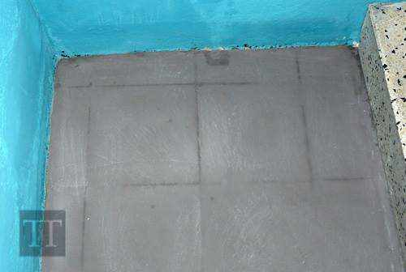

How to avoid unwanted stains or marks when applying Microcement
The following illustrates how the most frequent stains or marks are produced, and how best to work the material to avoid these imperfections
Lines at the joints between tiles
Some points should be considered to avoid the marks of the tile joints:
- Attention must be given to the varying absorption qualities between the tiles and the joints:
if no precautions are taken the resin contained in the Micro-cement will be absorbed differently
and risks the appearance of a spectral image (visual pattern) when dry. Moisture in the joints
also causes this defect.
- The joints are generally hollowed, lying beneath the level of the tile, once dry retraction of the Micro-cement creates a relief or embossed pattern in the area of the joints.
Consequently, with this system a layer is created that insulates and levels the area.
Trowel marks, highlighting irregularities in the previous coat
The Micro-cement must be applied without leaving burrs or reliefs that indicate the trowel’s movement, and any imperfections sanded after each coat. If a layer with burrs is applied, these reliefs will be reflected in this following coat.
With a steel trowel, plus any excess pressure, such imperfections cause the "burnt" effect, namely dark spots that reflect the lack of sanding of the coat beneath.
Sanding of irregularities
The Micro-cement requires sanding after each coat to avoid the effect described in the previous section. A gentle rubbing-back will be done with a low-speed rotary-orbital sander or sanding glove, and silicon carbide sandpaper.
Approximately 3 hours after the application, a change in the Micro-cement's tone becomes apparent. This indicates that Micro-cement is crossable and hard enough to sand, with the temperature, humidity and room ventilation causing a variation in this process.
Sanding is recommended not later than 12 hours after application, so that the coating has not hardened excessively which would complicate the finishing touch.